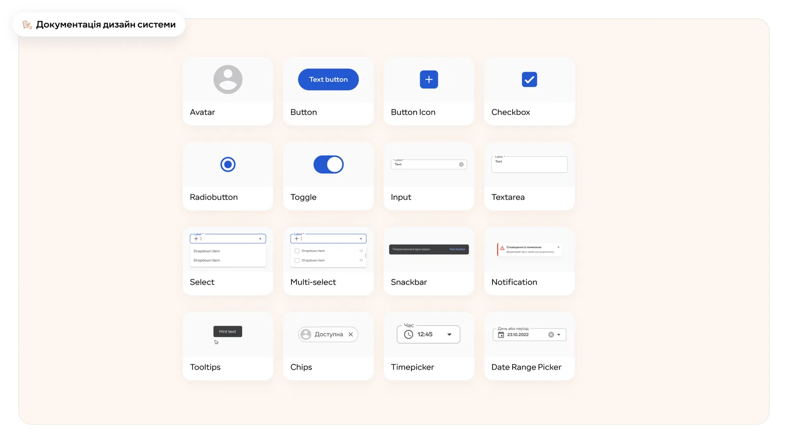
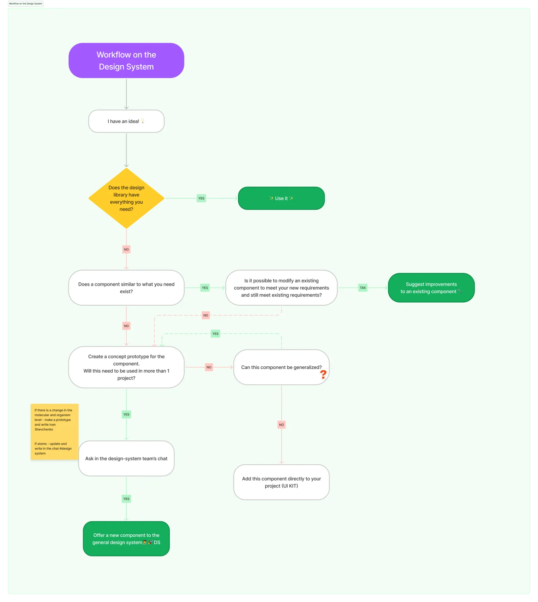

Silpo Design System — started without a mandate, sold as time to market.Silpo Design System — почав без мандата, продав як скорочення time to market.
A cross-platform design system for Silpo’s customer products: the web shop and a Flutter mobile app. It began as my own initiative, got C-level support through a business case, and set WCAG 2.1 AA as a requirement from day one.Кросплатформна дизайн-система для клієнтських продуктів «Сільпо»: вебмагазину й мобільного застосунку на Flutter. Вона почалася з моєї власної ініціативи, отримала підтримку C-level завдяки бізнес-кейсу і з першого дня мала WCAG 2.1 AA як вимогу.

The business problem: the same component, built twice.Бізнес-задача: той самий компонент, зроблений двічі.
Silpo had two customer surfaces that mattered — a web shop and a Flutter app. Every team rebuilt the same components in slightly different ways. Nobody had asked for a design system. There was only visible friction: slow delivery and small inconsistencies that customers could see.У «Сільпо» було дві важливі клієнтські поверхні — вебмагазин і застосунок на Flutter. Кожна команда заново будувала ті самі компоненти трохи по-своєму. Дизайн-систему ніхто не просив. Було лише помітне тертя: повільна розробка й дрібні неузгодженості, які бачили клієнти.
I did not pitch it as a design project. I framed it as a way to shorten time to market for product features, with a side effect the design team cared about: time back for research. That framing got C-level support, and the work started.Я подав це не як дизайн-проєкт, а як спосіб скоротити time to market для продуктових фіч, з побічним ефектом, важливим для дизайн-команди: звільненим часом на дослідження. Така подача отримала підтримку C-level, і робота почалася.
How we worked: interviews, priorities, then components.Як ми працювали: інтерв’ю, пріоритети, потім компоненти.
- Guerrilla interviewsПартизанські інтерв’юQuick conversations with designers and frontend engineers: what works today and what slows them down.Швидкі розмови з дизайнерами й фронтенд-інженерами: що працює зараз і що їх гальмує.
- Stakeholder interviewsІнтерв’ю зі стейкхолдерамиStructured sessions with the CTO, the Solution Architect, the Frontend and Flutter Architects and the Head of Design — to fix requirements and constraints before drawing anything.Структуровані сесії з CTO, Solution Architect, Frontend і Flutter Architects та Head of Design — щоб зафіксувати вимоги й обмеження, перш ніж щось малювати.
- Reference scanОгляд референсівMaterial, Cloudscape, Carbon and Polaris — for structure and governance, not for looks.Material, Cloudscape, Carbon і Polaris — заради структури й керування, а не вигляду.
- RICE prioritisationПріоритизація RICEReach, impact, confidence and effort for every item, so the roadmap could be defended to anyone who asked.Охоплення, вплив, упевненість і зусилля для кожного пункту, щоб роадмап можна було обґрунтувати перед будь-ким.
- WCAG 2.1 AA as an entry requirementWCAG 2.1 AA як вхідна вимогаAccessibility was part of the definition of a component from the first day, not a checklist at the end.Доступність була частиною визначення компонента з першого дня, а не чеклистом наприкінці.

Key decision: three levels of reuse.Ключове рішення: три рівні перевикористання.
Web and Flutter codebases are too different to share everything. Instead of forcing one artefact on every team, the system offers three levels, and each team takes the deepest one its stack allows.Кодові бази вебу й Flutter надто різні, щоб ділити все. Замість того щоб нав’язувати кожній команді один артефакт, система пропонує три рівні, і кожна команда бере найглибший, який дозволяє її стек.
- Patterns onlyЛише патерниShared behaviour and layout rules where codebases diverge too much. The brand stays consistent without component lock-in.Спільні правила поведінки й компонування там, де кодові бази надто розходяться. Бренд лишається цілісним без прив’язки до компонентів.
- Components and patternsКомпоненти й патерниThe same visual components on web and mobile, implemented per platform.Ті самі візуальні компоненти у вебі й мобільному застосунку, реалізовані окремо для кожної платформи.
- Full code reuseПовне перевикористання кодуOne implementation for products on the same platform, such as all Flutter apps.Одна реалізація для продуктів на одній платформі, наприклад для всіх застосунків на Flutter.

Tokens that make accessibility a lookup.Токени, з якими доступність видно одразу.
Every token name answers six questions: brand, theme, type, component, element, state. A raw hex becomes a primitive and the primitive becomes a role, so one component can serve two brands and two themes without forking.Назва кожного токена відповідає на шість питань: бренд, тема, тип, компонент, елемент, стан. Сирий hex стає примітивом, а примітив — роллю, тож один компонент обслуговує два бренди й дві теми без форків.

The palette was rebuilt as 50–900 scales, with the contrast ratio and its AA or AAA level marked on every step. A designer no longer argues about whether a colour pair is accessible — they read it off the swatch.Палітру перебудували у шкали 50–900, і на кожному кроці позначено коефіцієнт контрасту та його рівень AA або AAA. Дизайнер більше не сперечається, чи доступна пара кольорів, — він просто зчитує це зі зразка.

Rollout: documentation, training, governance.Впровадження: документація, навчання, керування.
- DocumentationДокументаціяZeroheight for foundations and patterns, Storybook for live components, Figma for design work.Zeroheight для основ і патернів, Storybook для живих компонентів, Figma для дизайн-роботи.
- WorkshopsВоркшопиSessions for designers and for engineers, and a shared channel for questions.Сесії для дизайнерів та інженерів і спільний канал для питань.
- A release pathШлях до релізуDesign check, integration in a test environment, then user testing — before a component is called ready.Дизайн-перевірка, інтеграція в тестовому середовищі, потім тестування з користувачами — лише після цього компонент вважають готовим.
- GovernanceКеруванняA monthly changelog, a saved version before every publish, and opt-in patterns instead of mandatory ones.Щомісячний changelog, збережена версія перед кожною публікацією і патерни на вибір замість обов’язкових.


Outcome — stated honestly.Результат — чесно.
The outcomes were qualitative: one visual language across web and mobile, and a documented core of 16 components, with the first of them live in Storybook. I have no hard number for time to market and will not invent one. The result I value most is that designers got research time back.Результати були якісні: одна візуальна мова у вебі й мобільному застосунку та задокументоване ядро з 16 компонентів, перші з яких уже живуть у Storybook. Точної цифри щодо time to market у мене немає, і я не вигадуватиму її. Найбільше я ціную те, що дизайнери повернули собі час на дослідження.
What I took into BitSvit three years later.Що я переніс у BitSvit через три роки.
- Sell the business case, not the libraryПродавайте бізнес-кейс, а не бібліотекуA design system without leadership support is a Figma file that ages quickly.Дизайн-система без підтримки керівництва — це файл у Figma, який швидко старіє.
- Ship a v1Випустіть v1A first version that is used beats a third version still in review. Versioning is part of the design.Перша версія, якою користуються, краща за третю, що досі на рев’ю. Версіонування — частина дизайну.
- Engineers are users tooІнженери — теж користувачіSo are QA and analysts. A system designed for one group at the expense of another loses adoption.Як і QA та аналітики. Систему, створену для однієї групи за рахунок іншої, гірше впроваджують.
If you liked this, also see…
Found this through Upwork?
Then you already know where to reach me. Send the brief through your Upwork job post or an invite — I usually reply within a working day.